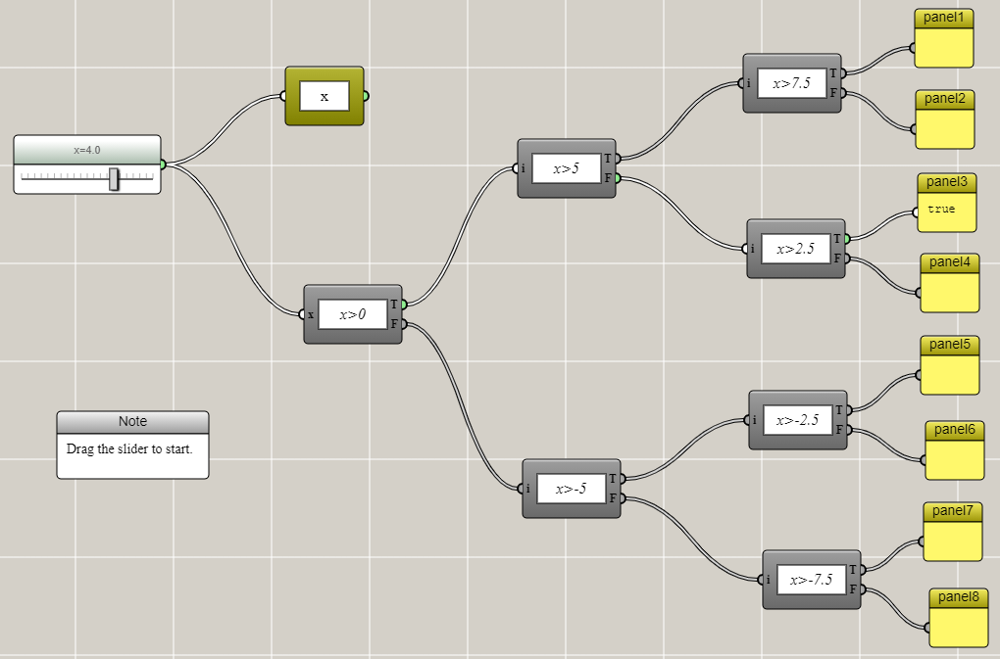
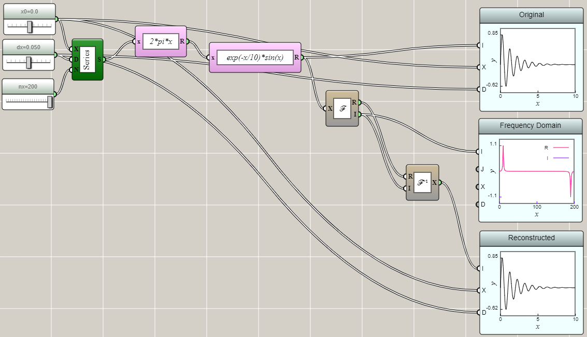
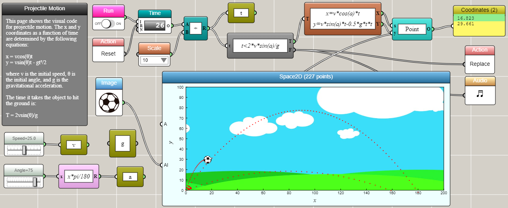

Control Flow vs. Data Flow
Two classic programming paradigms — and their mix — made visible through iFlow diagrams.
In computer science, control flow is the order in which individual instructions are executed. A control flow statement often results in a decision being made as to which of two or more paths is to follow in a computer program. Designing control flow is a key part of imperative programming.
In comparison, data flow defines a sequence of operations on data from a source to a destination. This often represents some sort of state transformation of a computer program (which can be viewed as a state machine in many cases). Data flow is often associated with declarative programming.
Control flow differs from data flow in that control flow typically does not change the data, whereas data flow typically transforms the data. Control flow and data flow are commonly combined in a computer program to solve a computational problem. iFlow supports both paradigms and their mix.
Control Flow
For example, the following is a simple control flow that shows "true" on a panel connected to a branch of a simple decision tree based on a value set by a slider. In this case, the value is the data and the tree is the control flow. The tree does not change the data but it controls how it is used.

Data Flow
The following example shows the Fourier transform as an application of data flow. In this case, data are transformed through a series of blocks to demonstrate the results of forward and inverse Fourier transforms. This example demonstrates that after applying the inverse Fourier transform to the complex number result of the Fourier transform of a function, the original function is reconstructed. This example does not contain any control flow. Data are just passed along without making any choice.

Mixed Flow
The following example shows an animation of the projectile motion as an application of mixing control and data flow. In this case, the data generated by a clock is transformed by a couple of equations based on Newton's Law. The flow is controlled by a turnout switch that decides whether the soccer ball has hit the ground. If so, the animation stops and the ball is reset to the original position so that the user can adjust the initial speed and angle of the ball to generate a different trajectory.
